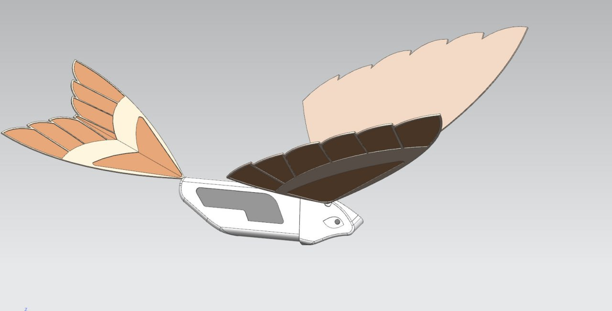
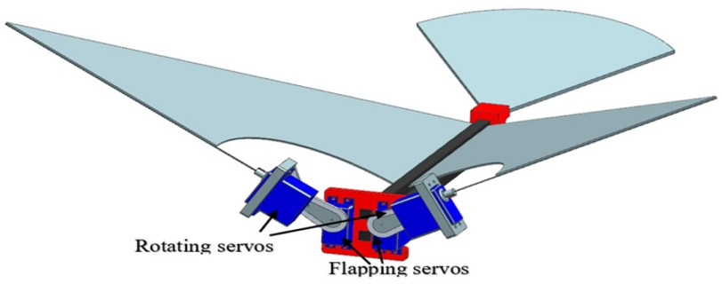

|  |
WHAT IS OAPS?
Ornithopter Anti - Poaching Surveillance is a flapping-wing aerial unit launched
upon detection for extended tracking and real-time surveillance transmission.
Unlike traditional quadcopters, ornithopters mimic natural bird flight,
making them less conspicuous to both wildlife and potential poachers. The
flapping motion provides excellent maneuverability in forest environments
and superior flight efficiency.
|
How does it work?
High-torque servo motors drive the wing mechanism, enabling controlled,
sustained flight patterns ideal for surveillance missions. The biomimetic
approach reduces wildlife disturbance while maintaining operational
effectiveness.
|
 |